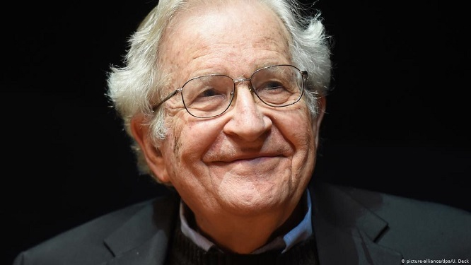
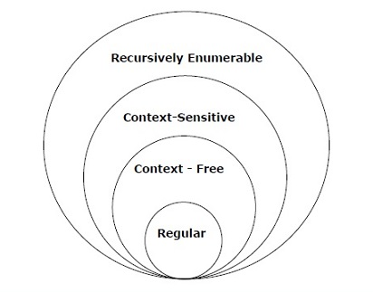

Teori Bahasa dan Otomata
Dalam teori bahasa formal, ilmu komputer, dan linguistik, hierarki Chomsky (terkadang disebut sebagai hierarki Chomsky-Schützenberger) adalah hierarki penahanan kelas-kelas tata bahasa formal. Hierarki tata bahasa ini dijelaskan oleh Noam Chomsky pada tahun 1956. Itu juga dinamai Marcel-Paul Schützenberger, yang memainkan peran penting dalam pengembangan teori bahasa formal.
Noam Chomsky
Menurut Noam Chomsky, tata Bahasa dibagi menjadi 4 jenis, berikut tabel menunjukkan perbedaannya satu sama lain:
| Grammar Type | Grammar Accepted | Language Accepted | Automaton |
| Type 0 | Unrestricted grammar | Recursively enumerable language | Turing Machine |
| Type 1 | Context-sensitive grammar | Context-sensitive language | Linear-bounded automaton |
| Type 2 | Context-free grammar | Context-free language/td> | Pushdown automaton |
| Type 3 | Regular grammar | Regular language | Finite state automaton |
Berikut ilustrasi yang menunjukkan ruang lingkup setiap jenis tata bahasa:
Setiap bahasa reguler merupakan context-free, setiap bahasa context-free merupakan context-sensitive, setiap bahasa context-sensitive bersifat rekursif dan setiap bahasa rekursif dapat dihitung secara rekursif. Ini semua adalah inklusi yang tepat, yang berarti bahwa terdapat bahasa yang dapat dihitung secara rekursif yang tidak context-sensitive, bahasa context-sensitive yang bukan bahasa context-free dan bahasa context-free yang tidak reguler.
Tata bahasa tipe-3 menghasilkan bahasa reguler. Bahasa reguler biasanya digunakan untuk menentukan pola pencarian dan struktur leksikal bahasa pemrograman. Bahasa-bahasa ini persis dengan semua bahasa yang dapat diterima oleh finite state autonom (FSA).
Tipe 3 adalah bentuk tata bahasa yang paling terbatas, harus memiliki satu non-terminal di sisi kiri dan sisi kanan yang terdiri dari satu terminal atau terminal tunggal diikuti oleh satu non-terminal.
Aturan Produksi:
X → a atau X → aY
dimana X, Y ∈ N (Non terminal)
dan ∈ T (Terminal)
Aturan S → ε diperbolehkan jika S tidak muncul di sisi kanan aturan mana pun.
Contoh:
X → ε
X → a | aY
X → b
Tata bahasa tipe-2 menghasilkan bahasa Context-free. Bahasa-bahasa yang dihasilkan oleh tata bahasa dikenali oleh Pushdown Automata.
Pada tipe 2 ini:
Aturan Produksi:
A → γ
dimana A ∈ N (Non Terminal)
dan γ ∈ (T ∪ N) * (String terminal dan non-terminal)
Contoh:
S → X a
X → a
X → aX
X → abc
X → ε
Tata bahasa tipe-1 menghasilkan bahasa context-sensitive. Bahasa yang dihasilkan oleh tata bahasa dikenali oleh Linear Bound Automata. Dalam Tipe 1 ini pertama-tama tata bahasa Tipe 1 harus Tipe 0.
Aturan Produksi:
α A β → α γ β
dimana A ∈ N (Non-terminal)
dan α, β, γ ∈ (T ∪ N) * (String terminal dan non-terminal)
String α dan β boleh kosong, tetapi γ tidak boleh kosong.
Aturan S → ε diperbolehkan jika S tidak muncul di sisi kanan aturan mana pun.
Contoh:
AB → AbBc
A → bcA
B → b
Tata bahasa tipe-0 menghasilkan bahasa yang dapat dihitung secara rekursif (recursively enumerable languages). Mereka menghasilkan bahasa yang dikenali oleh mesin Turing. Produksi tidak memiliki batasan. Itu adalah tata bahasa struktur fase apa pun termasuk semua tata bahasa formal.
Aturan Produksi:
α → β
dimana α berupa string terminal dan nonterminals dengan minimal satu non terminal dan α tidak boleh null.
β adalah string terminal dan non-terminal
Contoh:
S → ACaB
Bc → acB
CB → DB
aD → Db
Chomsky Classification of Grammars, Tutorials Point: https://bit.ly/3gJQGxg.
Chomsky Hierarchy, Wikipedia: https://bit.ly/3oRpmQD.
Chomsky Hierarchy in Theory of Computation, GeeksforGeeks: https://bit.ly/3meogfZ.